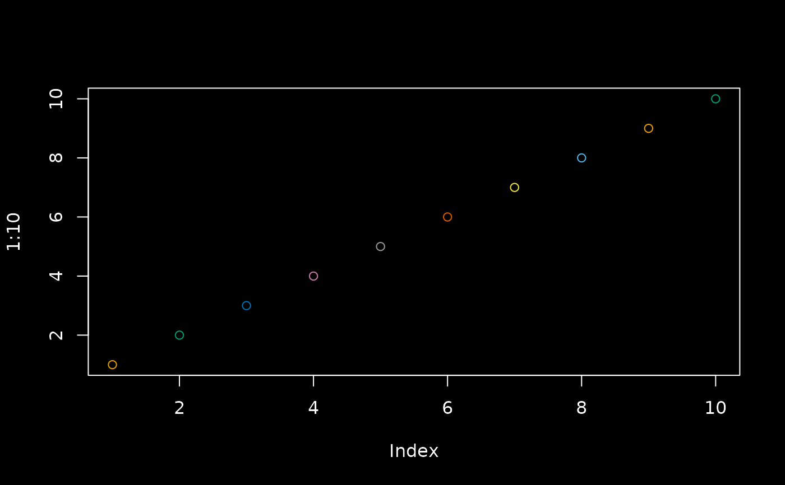
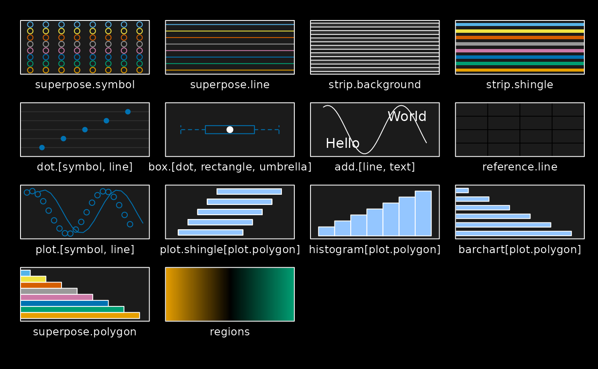
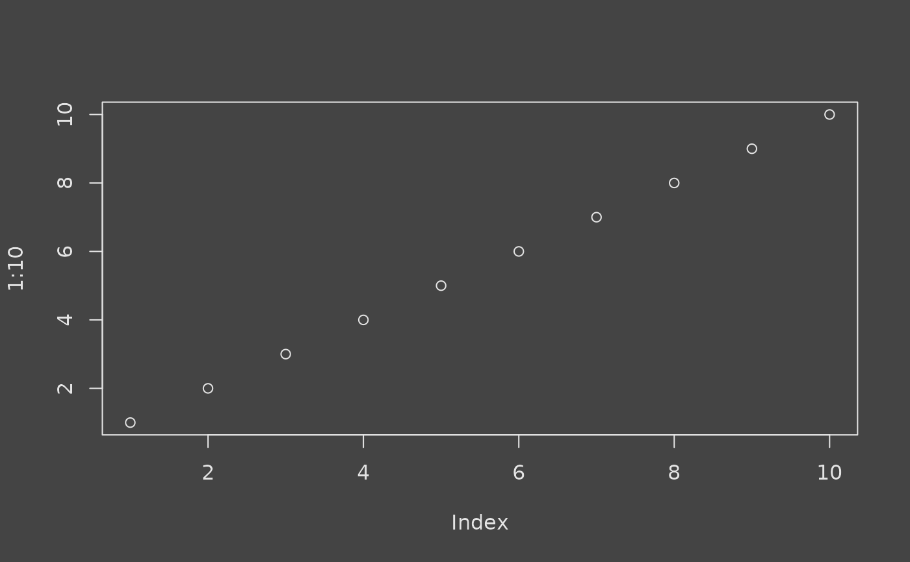
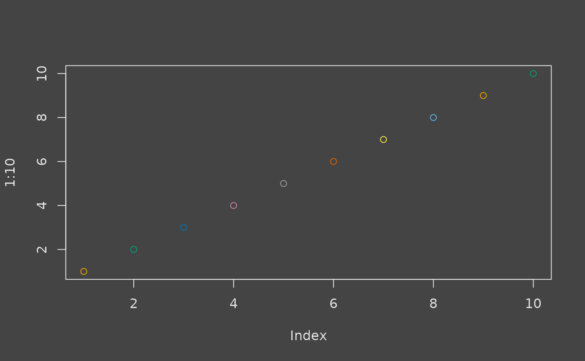
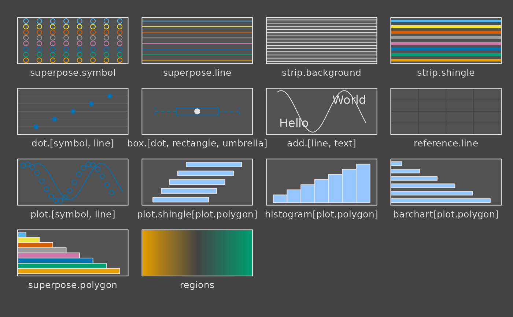
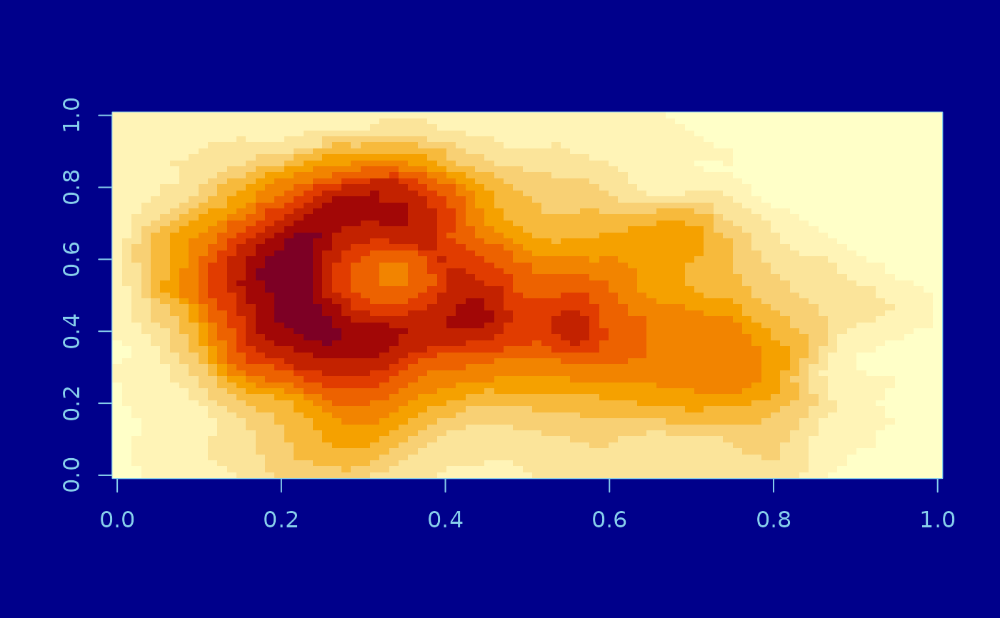
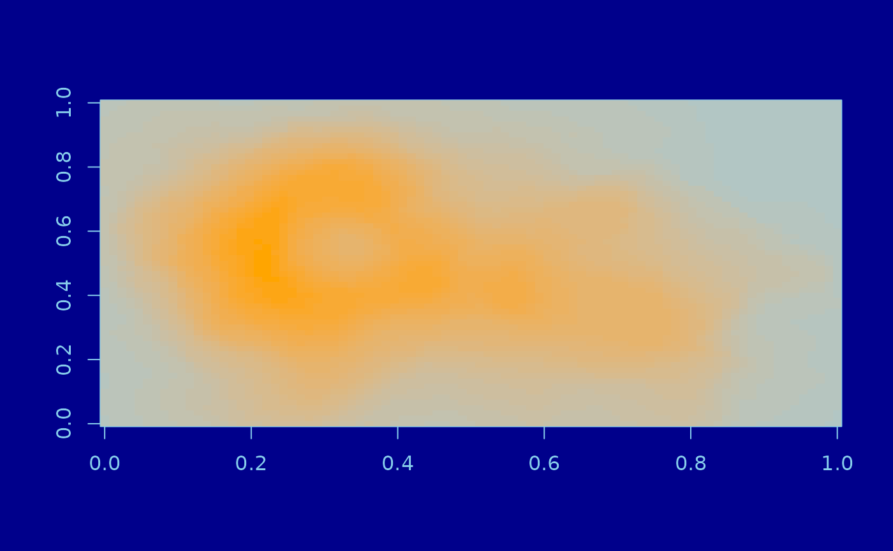
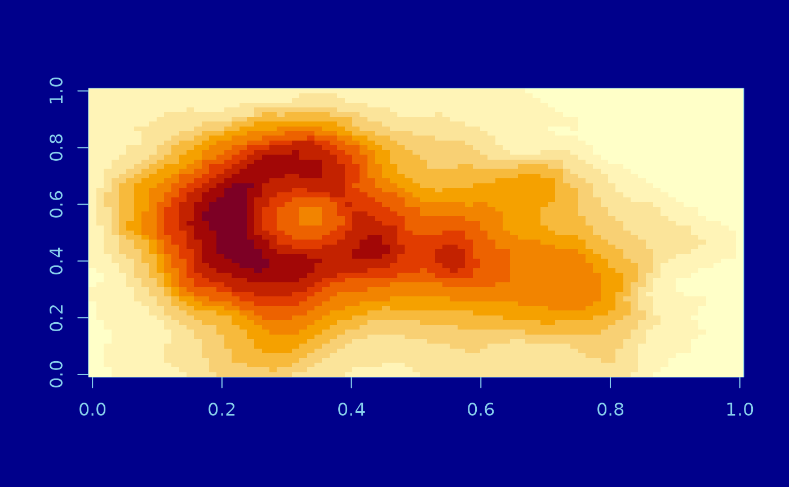
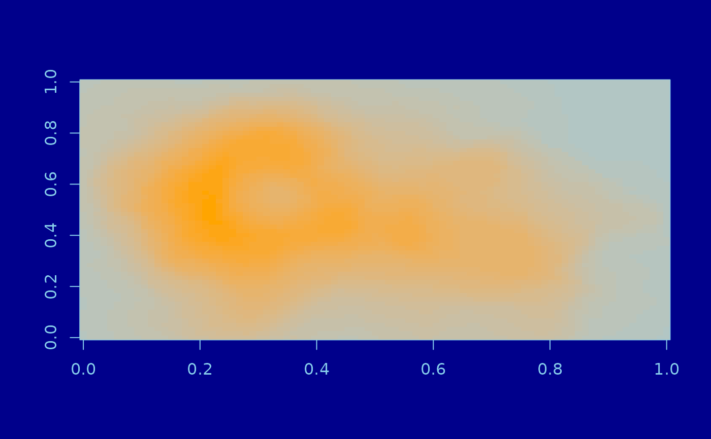

A unified interface for theming ggplot2, base, and lattice graphics based on a handful of styling options. In some cases (most notably in a shiny runtime), these options can automatically resolve to relevant CSS styles (see the "Auto theming" section below).
thematic_on(
bg = "auto",
fg = "auto",
accent = "auto",
font = NA,
sequential = sequential_gradient(),
qualitative = okabe_ito(),
inherit = FALSE
)
thematic_off()
thematic_theme(
bg = "auto",
fg = "auto",
accent = "auto",
font = NA,
sequential = sequential_gradient(),
qualitative = okabe_ito(),
inherit = FALSE
)
thematic_shiny(
bg = "auto",
fg = "auto",
accent = "auto",
font = NA,
sequential = sequential_gradient(),
qualitative = okabe_ito(),
inherit = FALSE,
session = shiny::getDefaultReactiveDomain()
)
thematic_rmd(
bg = "auto",
fg = "auto",
accent = "auto",
font = NA,
sequential = sequential_gradient(),
qualitative = okabe_ito(),
inherit = FALSE
)Arguments
- bg
a background color.
- fg
a foreground color.
- accent
a color for making certain graphical markers 'stand out' (e.g., the fitted line color for
ggplot2::geom_smooth()). Can be 2 colors for lattice (stroke vs fill accent).- font
a
font_spec()object. If missing, font defaults are not altered.- sequential
a color palette for graphical markers that encode numeric values. Can be a vector of color codes or a
sequential_gradient()object.- qualitative
a color palette for graphical markers that encode qualitative values (won't be used in ggplot2 when the number of data levels exceeds the max allowed colors). Defaults to
okabe_ito().- inherit
should non-specified values inherit from the previous theme?
- session
see
shiny::onStop().
Value
thematic_theme() returns a theme object as a list (which can be
activated with thematic_with_theme() or thematic_set_theme()).
thematic_on(), thematic_off(), and thematic_shiny() all return
the previous global theme.
Auto theming
The bg, fg, accent, and font arguments all support a value of 'auto',
which are all resolved, at plot time, based on the execution environment. In a
shiny runtime, resolution of auto values should always work as expect; but
in other contexts, auto values may lead to wrong or surprising results. In that
case, auto resolution logic can be customized (see auto_config_set() for more details).
Global vs. local theming
thematic_on() enables thematic in a global fashion (that is, it impacts all
future plots, up until thematic_off() is called). To use thematic in local fashion,
first create a theme with thematic_theme(), then provide it to thematic_with_theme()
(or similar). To use thematic in a global fashion up until a shiny
app exits, use thematic_shiny() (which cleans up after itself once the next shiny
app that exits using shiny::onStop()). To use thematic in a global fashion up until
a rmarkdown document finishes rendering, use thematic_rmd().
Color values
Colors (e.g., bg, fg, accent) may be any value understood by col2rgb()
or htmltools::parseCssColors() (i.e., may be any valid R or CSS color string).
Examples
# simple dark mode
thematic_on("black", "white")
plot(1:10)
plot(1:10, col = 1:10)

lattice::show.settings()

# use any hex color string
thematic_on("#444444", "#e4e4e4")
plot(1:10)

plot(1:10, col = 1:10)

lattice::show.settings()

# disables thematic (also restores global state)
thematic_off()
plot(1:10)
 lattice::show.settings()
thematic_on("darkblue", "skyblue", "orange")
image(volcano)

image(volcano, col = thematic_get_option("sequential"))

lattice::show.settings()
thematic_off()
lattice::show.settings()
thematic_on("darkblue", "skyblue", "orange")
image(volcano)

image(volcano, col = thematic_get_option("sequential"))

lattice::show.settings()
thematic_off()